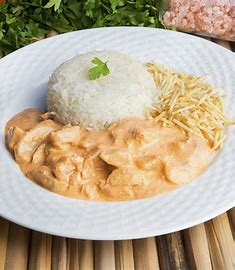

STROGONOFF
Como fazer strogonoff de frango simples e fácil: essa receita tradicional leva poucos ingredientes, fica pronta rápido e rende bastante; confira:+

Ingredientes
- 3 colheres de sopa de óleo
- 1 tablete de caldo de galinha
- 1 quilo de peito de frango em cubos
- 2 colheres de sopa de molho de tomate
- 2 colheres de sopa de mostarda
- 2 colheres de sopa de ketchup
- Champignon a gosto
- 1 lata de creme de leite sem soro
Modo de preparo
- Em uma panela, coloque 3 colheres de sopa de óleo e 1 tablete de caldo de galinha. Espere aquecer para dissolver o tablete.
- Em seguida, adicione 1 quilo de peito de frango em cubos e deixe dourar.
- Depois, acrescente 2 colheres de sopa de molho de tomate, 2 colheres de sopa de mostarda, 2 colheres de sopa de ketchup e champignon a gosto. Misture.
- Desligue o fogo e acrescente 1 lata de creme de leite. Misture novamente.
- Sirva em seguida.
AGORA É SÓ SE FELIZ!!!